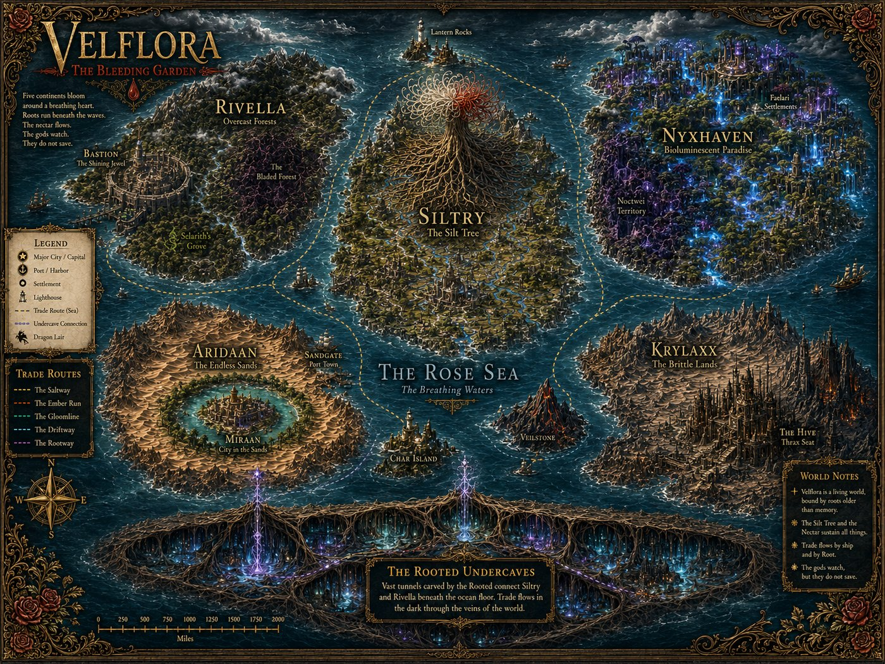
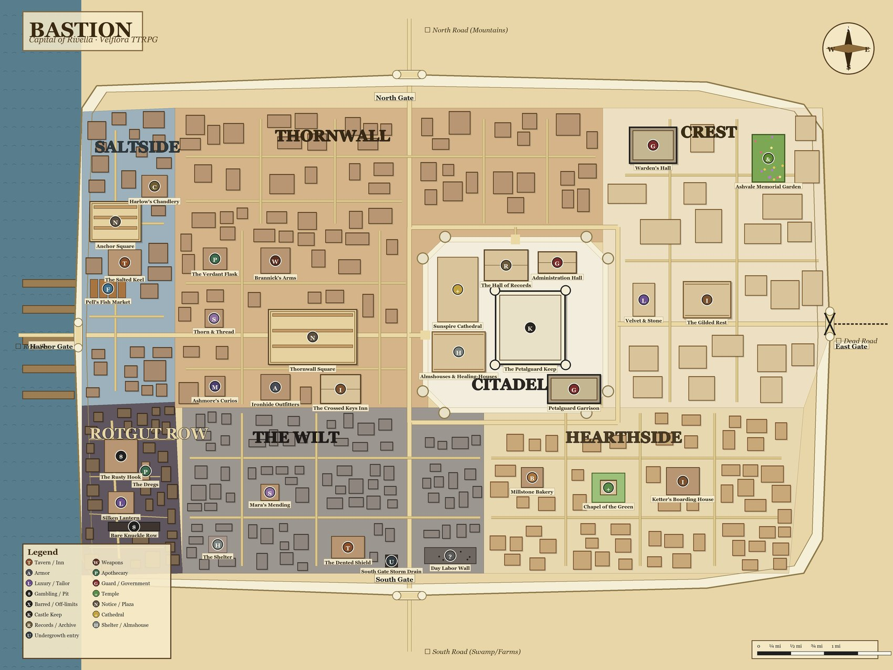
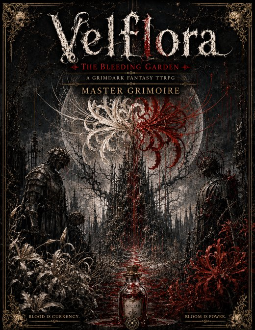
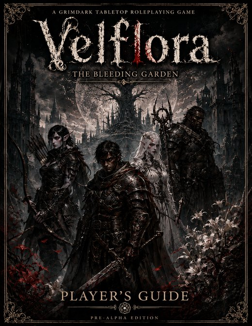
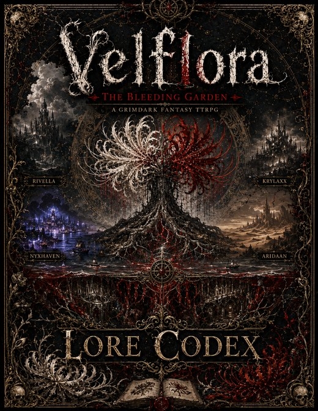
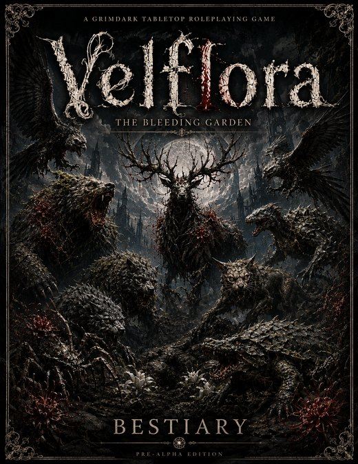

A World With a Pulse
Five continents arranged like the petals of a rose around a central sea — and at the heart-continent, the mile-high Silt Tree, blooming into a colossal spider lily visible from every shore.
Velflora's signature is its blood economy. Currency, treasure, and spell-fuel are the same substance: Nectar, refined blood, drawn by enchanted vial from everything that dies. Drink it and it becomes Bloom — magic — but Bloom only returns at dawn, and dawn can be a very long way down.
Above it all sit the Thirteen Stems, gods forbidden from acting directly. Beneath it all, three rots share one name: the creeping Blight that sickens the land, the soul-rot of the unmourned dead, and plain human venality, which needs no magic at all.
The world needs saving — and the gods are the reason it needs saving.

Rivella
The Broken PetalRain-soaked and spiritually exhausted — a dying countryside around one gleaming city, with the Blight creeping in from the east.
Nyxhaven
The Glowing CageThe most beautiful continent alive: a bioluminescent isle whose people carry the two most valuable bloods in the world — and lock their paradise from the inside.
Aridaan
The Continent of StrengthA lethal desert with one green heart, ruled openly by a single law: the strong rise, the weak fall.
Krylaxx
The Hive ContinentHome of the emotionless Thrax, born of a single Matriarch — a civilization that ignores outsiders until it reclassifies them as a problem.
Siltry
The Heart PetalThe sacred center where the Silt Tree grows and the ground itself is more alive. Forbidden to outsiders.
The Rooted Undercaves
The Road Inside the RootsThe world grew a road for the people of the deep: two colossal hollow-hearted roots of the Silt Tree, alive and glowing, carrying passage beneath the sea — and taproots below that no lantern has followed to the end.
Bastion — The Shining Jewel
The most pristine city on the planet: a walled western port of white limestone, projecting prosperity, faith, and safety to everyone who passes its gates.
Seven districts descend from the Citadel's marble to the grey blocks of the Wilt — and beneath them all runs the Undergrowth: cellars, smuggler tunnels, and passages older than the city, opening into the underground bazaar of the Mudmarket and the long Deep Stair down.
Bastion is a curated utopia — a city standing on a foundation that does not bear looking at. Campaigns start on the gleaming surface. They rarely stay there.
Walk the Interactive Map
Fourteen Callings, One Flower Each
Every person is born marked by a flower that blooms at their birth — the sign of their Calling. Fourteen Callings, three Subcallings each, forty-two ways to answer. Those born under no flower are called Weeds… and the world underestimates them at its peril.
Bladesworn
Weapon master whose bond with a chosen blade deepens the longer it's wielded.
Juggernaut
Unstoppable armored bulwark whose Bloodrage escalates as the wounds mount.
Bloodfist
Unarmed discipline made lethal — build Flow, then spend it on a finisher.
Nightshade
Elegant blade-dancer riding momentum and charm in equal measure.
Shadowborn
Stealth and precision — plant a Shadow Mark now, detonate it later.
Boundless
Ranger-tactician whose branded Quarry can run, but never hide.
Embraced
Divine warrior sworn to a patron Stem — shields, wards, and branded smites.
Illuminated
Channeler of holy Light — the healer, and the undead's worst morning.
Arcanist
Reality-bending scholar of time, space, or matter.
Inscripted
Elemental scholar who writes fire, ice, wind, earth, and lightning into the world as glyphs.
Extinguished
Shadow, death, and decay — demons answered, souls siphoned.
Beastwalker
Druidic shapeshifter who bonds with beasts and wears hybrid forms.
Dirge
Death's musician — songs that heal, harm, and command, building toward a Conducted crescendo.
Wordless
Weaponless psion paying for pure mind-power in Strain.
Every Calling holds exactly one defensive identity — a dodge, a soak, or a ward. Never all three. Choose what you are, and own what you are not.
Roll Under. Lower Is Always Better.
Velflora runs on 2d6, rolled under your stat — for attacks, saves, socials, even initiative. Snake-eyes is triumph; boxcars is disaster. Fights are fast, lethal, and resource-anxious by design.
⚁⚀ Serendipity & Misfortune
No flat modifiers piling up — roll 3d6 and keep the better (or worse) two. Fortune is a texture, not a spreadsheet.
Armor Is a Choice, Not a Number
Heavy plate makes you easier to hit but soaks the blow — the tank is a sponge, not a dodger. Roll exactly the target's Avoidance and you graze for half.
Magic Waits for Dawn
Bloom doesn't refresh on a nap. It returns at first light — so at midnight, three rooms deep, every spell is a decision.
Burn Your Fortune
Out of Bloom? Drink raw Nectar — the literal currency — and convert wealth to magic at a punishing rate. The most expensive breath a hero ever takes.
Poison Ignores Plate
Burn, bleed, and venom slip past every point of armor. The Juggernaut fears the small vial more than the great axe.
Three Beats and a Breath
A turn is three Decisive actions plus one Off-Turn action — no reaction bookkeeping, no waiting your life away.
Four Books, One Garden
Velflora ships as a library: an omnibus Grimoire for the Propagator — the one who tends the story — and clean player-facing volumes with the secrets pruned out.

The Grimoire
266 PAGES · PROPAGATOR'S OMNIBUSEverything — world, rules, bestiary, adventures, and the pages marked Eyes Only.

Player's Guide
110 PAGESRaces, Callings, the rulebook, and Bastion — everything a player should know, and nothing they shouldn't.

Lore Codex
120 PAGESThe Thirteen Stems, the Nine Dragons, and the World Atlas — the Bleeding Garden in full bloom.

Bestiary
55 PAGESWhat grows in the dark, what it wants, and how fast it can run.
Ready-to-Run Adventures
- The Gentle-Soul Ledger — a gentle paid job escorting the almshouse's night charity-cart through Bastion's poorest streets… straight into a wave of risings the whole city is misreading. Grimdark-humane, levels 2–4.
- The Quiet House on the Cinder Road — three groups walked up the drive since the thaw; none walked back. The house didn't kill them loudly. It simply kept them. A horror crawl where light is the only honest weapon.
- Forty-five quest seeds and ten campaign arcs — from The Spreading Blight to The Ninth Dragon — spanning every petal of the world.
And Growing
- Blossoming Weeds — a lighter standalone mini-game about the folk born under no flower, with its own character sheet.
- The Velflora Character Companion — a digital companion app for sheets, dice, and combat tracking at the table.
A World Too Alive to Stay on Paper
Velflora was built as a world first and a rulebook second — and a world this alive doesn't sit still. The ambition is simple: keep growing the Bleeding Garden and its lore into mediums beyond the table.
Imagine walking Bastion's white limestone streets yourself. Hearing the harbor at Saltside. Taking the Deep Stair down into the torch-lit dark of the Undergrowth. Everything here is written with that future in mind — one living canon, many doors into it.
- One living canon — every book, adventure, and map grows the same world, so each new platform inherits deep, rooted lore instead of starting over.
- Already more than a book — the interactive Bastion map and the Character Companion app are the first steps off the page.
- New platforms ahead — the long-term dream is to let you step into Velflora, not just read about it.
"The Bleeding Garden is not finished growing."
Tabletop today. Tomorrow, wherever the roots reach.